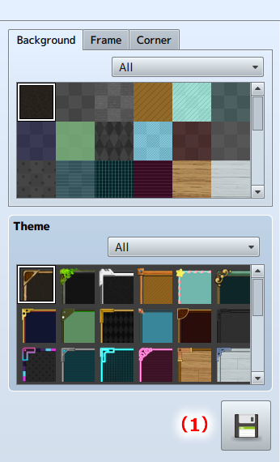

Export Window
Export Window
Save the window created to the MV Project.

- (1) Export All
-
After clicking, the MV Project folder selected will be displayed. Click [Select Folder] to save the file, and the Window Image, configuration JSON data, and a JavaScript file for application to MV will be exported.
* If all the parts for the [Dialogue], [Status], [Battle], and [Other] scenes are not set, there will be an error during exporting.
* There will be an export error if the folder selected does not contain the MV Project file [Game.rpgproject].